ביצוע פרויקט מחקרי במהלך התואר הראשון, מאפשר הצצה טובה למחקר שניתן לעשות במסגרת תואר מתקדם בפקולטה. חברות וחברי הסגל השונים מציעים תחומי מחקר מגוונים לפרויקטים עבור סטודנטיות וסטודנטים מצטיינים בפקולטה. ניתן לפנות אליהם ולשוחח איתם על תחומי המחקר השונים ולבחור איתם את הנושא לפרויקט המחקרי. זו הזדמנות עבורכם להכיר חברות וחברי סגל שבהמשך יוכלו להיות גם המנחים שלכם בתואר מתקדם.
אישור חברי הסגל לפרויקט מחקרי בתחום מסויים, תלוי גם בקורסים שהסטודנטים ביצעו.
שימו לב:
- הרשימה של הפרויקטים המוצעים הינה חלקית. במידה ואתם מתעניינים באחד מתחומי המחקר המוצעים, תוכלו לפנות לחבר.ת הסגל ישירות.
- חברי סגל נוספים עשויים להציע גם הם פרויקטים מחקריים, ניתן לפנות אליהם באופן ישיר.
- יש עוד נושאים רבים שיכולים להיות בסיס לפרויקט מחקרי, תוכלו להציע ולקבל את אישורם של חברי הסגל.
- כדאי לבדוק את האתרים השונים של חברות וחברי הסגל לפני הפנייה אליהם.
קיימים 3 קורסים אופציונאליים שבמסגרתם ניתן לבצע פרויקט מחקרי:
הטבלה הבאה מציגה את הדרישות השונות (כמות נק”ז שנצברו + ממוצע ציונים) ואת נקודות הזכות הניתנות במסגרת כל קורס.
| קורס | דרישות | נקודות זכות |
|---|---|---|
| 00440180 | ממוצע 91 | נקודות מצטברות 100 | 4 |
| 00440184 | ממוצע 86 | נקודות מצטברות 100 | 2 |
| 00440185 | ממוצע 86 | נקודות מצטברות 80 | 1 |
| 00440000 | לחברי תוכנית אמ”ת | לחברי תוכנית אמ”ת | 4 |
לפרטים נוספים ניתן לפנות לפרופ’ יניב רומנו – האחראי האקדמי על סטודנטים מצטיינים בפקולטה yromano@technion.ac.il
-
עליך ליצור קשר במייל עם חבר.ת הסגל. המייל צריך לכלול רקע עליך (קורסים רלוונטים, פרויקטים קודמים, ולמה הנושא מעניין אותך), תוך הדגשת הישגים והצטיינויות.
-
את הפרויקט מומלץ להתחיל לכל הפחות לאחר ביצוע קורסי מבוא בתחום המחקר הרלוונטי לפרויקט. לדוגמה, אם הפרויקט הוא בתחום של מערכות לומדות מומלץ לקחת את הקורס המתאים בפקולטה 00460195 טרם התחלת הפרויקט. הפרויקטים מוגדרים כסמסטריאליים, אך יתכן כי בפועל יפרשו על יותר מסמסטר קלנדרי אחד (לכן מומלץ להתחיל את הפרויקט לפחות שנה לפני תום הלימודים). תכולת הפרויקט הינה בפרופורציה למספר הנקודות של המקצוע (4,2,1 נק”ז).
-
חבר.ת הסגל מנחה את הפרויקט ואופן ההנחייה יקבע על-ידם בהתאם לצרכי המחקר.
-
בדרך כלל המחקר ידרוש רקע של קורסי מבוא בתחום המתאים לפרויקט. יש לברר דרישות קדם ספציפיים מול חבר.ת הסגל.
-
העדיפות לפרויקטי מחקר היא תחת המקצועות הייעודיים 00440180, 00440184, 00440185, 00440000, אך חברי סגל רשאים להנחות פרויקטי מחקר גם תחת המקצוע פרויקט ב’.
-
סטודנטים בתכנית אמ”ת מתבקשים להתייעץ עם ראש התכנית לפני בחירת פרויקט מחקרי. כברירת מחדל הם יבצעו את הפרויקט תחת המקצוע הייעודי לתכנית אמ”ת 00440000.
לפרסום פרויקט מחקרי חדש יש לפנות למזכירות הפקולטה
Systems & Control | Machine learning and intelligent systems & Computers
-
Progress in cyber-physical technologies such as autonomous vehicles (AVs) and wireless communications will enable the deployment of autonomous mobility-on-demand (AMoD) systems: fleets of AVs providing on-demand mobility. The main advantage of AMoD systems is that they can be controlled by a central operator in a system-optimal operation, i.e., optimizing global objectives such as the minimization of travel times of all the travelers in a given city. One aspect that could drastically improve system-optimal operation is ridesharing capabilities wherein an individual vehicle can drive multiple people that don’t necessarily share the same origin and destination. Unfortunately, existing approaches for AMoD routing cannot account for ridesharing capabilities in a computationally efficient manner, as ridesharing gives rise to tremendously difficult optimization problems.
In this project we will explore new algorithmic approaches for ridesharing AMoD via convex programming and recent advances in optimization of traffic flow. This project involves algorithm development, optimization, implementation in software, and simulation.Long Term Project
image: Ridesharing in Autonomous-Mobility-on-Demand
February 24
-
Progress in cyber-physical technologies such as autonomous vehicles (AVs) and wireless communications will enable the deployment of autonomous mobility-on-demand (AMoD) systems: fleets of AVs providing on-demand mobility. The main advantage of AMoD systems is that they can be controlled by a central operator in a system-optimal operation, i.e., optimizing global objectives such as the minimization of travel times of all the travelers in a given city. Conversely to conventional navigation providers computing the fastest route by passively considering congestion in an exogenous manner, AMoD systems enable one to consider the endogenous impact of individual vehicle’s routes on road traffic and travel time, and can thus be operated in a congestion-aware fashion. Unfortunately, developing effective congestion-aware routing approaches is challenging computationally, especially when considering realistic dynamic traffic flow models to capture the influence vehicles have on travel times.
In this project we will develop efficient algorithms for routing AMoD systems while accounting for dynamic traffic models. In particular, we plan on exploiting the underlying structure of the cell-transmission model (CTM), which accurately models flows via linear programs, in the development of fast and accurate algorithms. One idea that we could exploit is transforming the optimization problem resulting from CTM into a closely related min-cost flow problem, for which effective algorithms exist. This project involves algorithm development, optimization, implementation in software, and simulation.Long Term Project
image: Dynamic Routing of Autonomous Vehicles
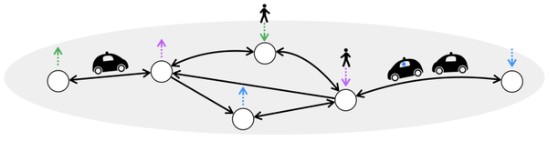
February 24
-
Our research team addresses challenges in machine learning applications for renewable energy integration. One example of a question that we’re interested in is efficient production of energy. To deal with the uncertainty in the production of renewable sources, we need to plan how much power needs to be generated in advance. Our main goal is to ensure that the generated power follows as closely as it can the electricity demand. In general, tracking problems appear across various fields and have multiple and diverse applications such as tracking satellites trajectories, motion tracking for autonomous navigation and more. Until now, when the desired signal to be followed is known, there are different numerical methods for designing the control of the system. Our research team offered for the first time a closed analytical solution to this problem which relies on accurate prediction of the reference signals, usually by machine learning estimators. The goal of this project is to understand what underlying statistical method, and what algorithmic approach of the machine learning model, is the most suitable to leverage our analytical solution, and will result in the optimal tracking of the reference signal.
Long Term Project
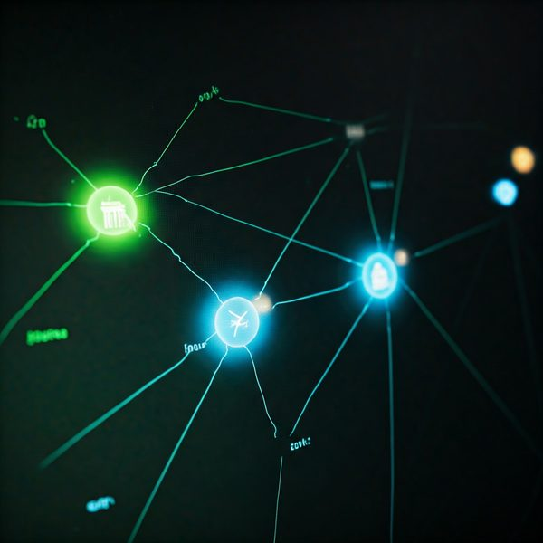
February 24
Communication & Information Theory | Machine learning and intelligent systems & Computers
-
Abstract: Large language models receive tremendous attention in research and industry. These models are only trained to predict missing words in sentences provided as training data, yet they seem to have good capabilities in information retrieval as demonstrated by ChatGPT. Nevertheless, it is unclear to what degree the output of the model relies on memorizing text in the training data or whether the model truly learns semantic language rules and is capable of abstract representation of “knowledge”. In this project we propose an experimental synthetic information-theoretic framework to elucidate this problem. Generalizing well on the data in this experiment will show that the model learns the relatively simple generative model describing the training data rather than memorizing long sections of the training data.
Your Role: To explore the ability of a large transformer-based language model to describe a text with a relatively high entropy rate, that is produced by a relatively simple model. This will be achieved by generating synthetic data, training various models, and interpreting the results in information-theoretic terms.
Requirements: A background in NLP and some hands-on experience with training or fine-tuning large language models in the order of GPT2.0 or larger.
Advisors: Assistant Dr. Alon Kipnis (alon.kipnis@runi.ac.il) and Assistant Prof. Nir Weinberger (nirwein@technion.ac.il)
Long Term Project
image: Large language
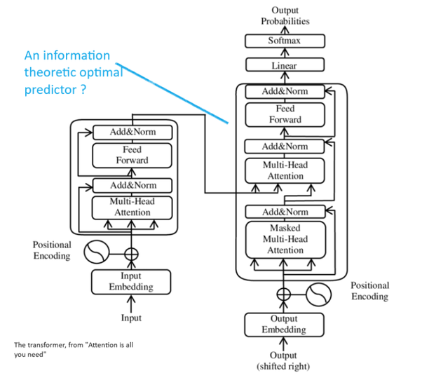
December 23
-
In a DNA-storage system, information is stored in an unordered set of short reads. During the reading operation, each of these reads is duplicated multiple times, and then sequenced to obtain a noisy read. The noise includes substitution, deletion and insertion errors. The first step of the decoder is to successfully cluster the noisy reads.
Your Role: Designing and training a state-of-the-art machine-learning architecture to perform noisy clustering.
Requirements:
• Background in information theory or communication, machine learning, and DNN.
• Hands on experience with training DNN and transformers.Advisor: Assistant Dr. Nir Weinberger (nirwein@technion.ac.il)
Long Term Project
image: Clustering DNA
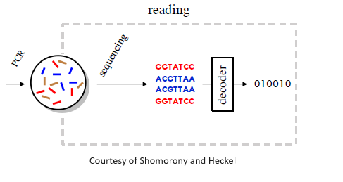
December 23
Computer Networks | Machine learning and intelligent systems & Computers
-
Neural networks have shown tremendous success in various tasks. At the same time, they have been shown to be vulnerable to various attacks. Adversarial example attacks generate small perturbations to inputs with the goal of causing a neural network to misclassify. While there has been a lot of work on proving local robustness of neural networks, all focus on the analysis of a single input at a time. Consequently, it is hard to obtain guarantees for large datasets in a practical time.
In this project, we will leverage the relations of inputs in a given dataset to design a verifier that reduces the analysis time by few orders of magnitude. The idea is to define a partial order over the analysis of a few inputs to predict the analysis result of other inputs, thereby significantly pruning the search space of the analysis.
Advisor: Dr. Dana Drachsler Cohen (ddana@ee.technion.ac.il)
image: CIF-TEM System
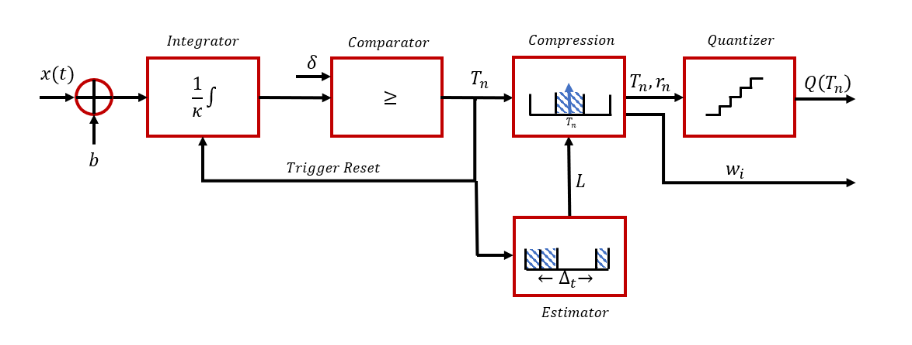
Long Term Project
December 23
Image & Signal Processing, Computer Vision & Bio-signals | Electronic Circuits, VLSI Systems & Power Systems
-
Analog to Digital Converters (ADCs) are among the most utilized components in digital systems today. An integrate-and-fire time-encoding-machine (IF-TEM) is an energy efficient asynchronous sampler. Utilizing the IF-TEM sampler for bandlimited signals, we introduce designs for time encoding and decoding with analog compression prior to the quantization phase. Before the quantizer, efficient analog compression is conducted based on the stationarity of the encoded signal, which is a fundamental characteristic of IF-TEM processing.
So far, the algorithm was only simulated in MATLAB.
This in a joint project with SIPIL lab and professor Alejandro Cohen
Project goal:
Implementing the sampler on hardware. The implementation will be on a PCB (Printed Circuit Board) using IC component. The students will design and simulate the PCB board. The board will be manufactured and the student will do a bring up procedure to the board. The sampler will work on audio signals.
This is a unique opportunity to experience mix signal (analog and digital) design.
Project duration: one semester with an option to two semesters
Supervisor: Mony OrbachLong Term Project
December 23
Image & Signal Processing, Computer Vision & Bio-signals | Machine learning and intelligent systems | Communication & Information Theory
-
Objective:
————–
To develop and validate a neural network-based mutual information estimator that quantifies the information content of different PSFs in encoding 3D structures from 2D images.Background:
——————-
3D scenes can be optically encoded in 2D images, using appropriate physical modification of the imaging system, specifically, engineering the point-spread function(PSF) of the system. In this project the imaging system is an optical microscope. The project deals with the use of Mutual Information (MI) as a measure of how much information about a 3D object is preserved in its 2D encoded image. MI will be estimated using MINE, which trains a neural network to maximize a variational lower bound on MI.Tasks and Methods:
——————————-
Dataset Preparation:
(1) Use synthetic 3D datasets and their corresponding 2D encoded images generated using different PSFs.
(2) Explore different noise levels (varying SNR conditions) to evaluate MI robustness.Implementing MINE:
(1) Train a simple neural network with two input streams (3D object and 2D projection) to estimate MI.
2) Use a variational lower bound to compute MI efficiently.Performance Evaluation:
(1) Compare MI values for different PSFs.
(2) Validate by testing MI estimation on known simple objects (e.g., point sources).Possible Optimization and Speed-up Strategies:
(1) Investigate fast MI estimation techniques if MINE is too slow.
(2) Explore pre-training strategies to make iterative MI updates more efficient.Expected Outcome:
——————————
(1) A ranking of PSFs based on their MI values.
(2) An efficient MI estimation pipeline.Skills Required:
———————–
Python, PyTorch (for neural networks).
Basic knowledge of information theory and mutual information.
Preferably: some understanding of computational imagingLong Term Project
February 25
Image & Signal Processing, Computer Vision & Bio-signals | Electromagnetics & Photonics
-
Can we see through thick tissue layers without cutting the subject?
Seeing inside tissue is one of the hardest barriers in biomedical research and in medical imaging, mostly because cells inside the tissue aberrate and scatter the light waves passing through it. Even after propagating through tissue layers as thin as a few dozen micrometres, the resulting images are highly aberrated and are uninterpretable by the human eye. Despite this we develop a number of computational tools which can see biological components such as fluorescent neurons, deep inside the tissue.
The research will combine a number of tools in optics and algorithmic processing, including machine learning, statistics and advanced optimization.Advisor: Prof. Anat Levin (anat.levin@ee.technion.ac.il)
image: Imaging neurons deep inside the brain
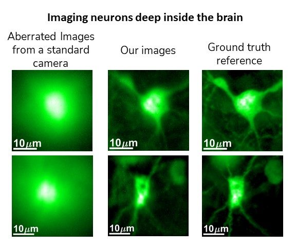
Long Term Project
December 23
Electromagnetics & Photonics
-
The project aims to harness the novel concept of metagratings (MGs) for the development of dual-polarized broad-angle absorbers at mm-wave frequencies. Such conformal and low-cost printed-circuit-board (PCB) covers are in high need for radar applications, where means to suppress the strong multipath reflections stemming from metallic objects are required to enable accurate target identification.
MGs are low-profile devices composed of sparsely distributed subwavelength polarizable particles (meta-atoms), recently shown to enable precise manipulation of reflected and transmitted waves with unprecedented efficiency [1]. The key for achieving such performance lies in judicious engineering of the meta-atom constellation and particle geometry such that the interference between all scattered fields results in the desirable pattern [2]. Indeed, in the past couple of years, we in the META group have theoretically derived and experimentally verified an analytical model allowing synthesis of PCB MGs for prescribed beam deflection functions at microwaves [3].
More recently, we have utilized the fact that this model incorporates loss and inherently accounts for frequency and angle of incidence variation to explore the possibility to use such MGs as wide-angle absorbers. This was achieved by breaking the half-wavelength periodicity bound adhered to in conventional devices [4], shown to be beneficial when multifunctionality (e.g., multi-angle response) is desired [5]. Relying on a rather uncommon resistive sheet PCB technology, we were able to maximize loss by dissipating power in localized resistors defined in both internal and external layers. Despite promising results in preliminary experiments, the device versatility is still limited, absorbing signals only at a single polarization along one dimension, and relying on a somewhat unique (and potentially costly) fabrication process.
In the proposed project, the students will extend the analytical models and synthesis methodologies to develop dual-polarized absorption capabilities by combining two sets of dipole scatterers with orthogonal polarizabilities, possibly utilizing low-cost lossy substrates (e.g., FR4) to dissipate power in the bulk. Once the model is augmented correspondingly, the constraints associated with multi-angle absorption could be formulated, which, when resolved, would yield a fabrication-ready layout for the envisioned MG. If time permits, a prototype absorber would be manufactured and measured at the META group laboratory at the Technion.
Students will in analytical modeling and formulation, full-wave numerical simulations in commercial (industry-standard) solvers, and (if time permits) hands-on experiments.
Bibliography
[1] Y. Ra’di and A. Alù, “Metagratings for Efficient Wavefront Manipulation,” IEEE Photonics J., vol. 14, no. 1, pp. 1–13, Feb. 2022.
[2] Y. Ra’di, D. L. Sounas, and A. Alù, “Metagratings: Beyond the Limits of Graded Metasurfaces for Wave Front Control,” Phys. Rev. Lett., vol. 119, no. 6, p. 067404, Aug. 2017.
[3] O. Rabinovich and A. Epstein, “Arbitrary Diffraction Engineering With Multilayered Multielement Metagratings,” IEEE Trans. Antennas Propag., vol. 68, no. 3, pp. 1553–1568, Mar. 2020.
[4] Y. Ra’di, C. R. Simovski, and S. A. Tretyakov, “Thin Perfect Absorbers for Electromagnetic Waves: Theory, Design, and Realizations,” Phys. Rev. Appl., vol. 3, no. 3, p. 037001, Mar. 2015.
[5] Y. Yashno and A. Epstein, “Large-Period Multichannel Metagratings For Broad-Angle Absorption,” in 16th Int. Congr. Artificial Mater. Novel Wave Phenomena (Metamaterials), 2022.Advisor: Prof. Ariel Epstein (epsteina@ee.technion.ac.il)
Image: All Angle Absorbers
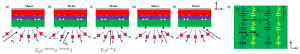
Project duration: Current Semester, Next Semester
December 23
-
Exciton-polaritons are intriguing quasiparticles emerging from the interaction in a microcavity between the cavity photons and bound electron-hole pairs, the excitons. The result is a quantum superposition of light and matter with unique behavior. On the one hand polaritons can escape the cavity as light, but on the other hand interact with each other through their excitonic constituent. In addition, the mixed nature of polaritons facilitates the formation of a polariton Bose-Einstein condensate (BEC), the macroscopic quantum state of stimulated accumulation of boson particles at the ground energy state. Fascinating BEC-related phenomena have been observed in polaritons such as superfluidity and solitons.
We induce an ultrafast and reversible modulation of the energy of polariton BECs. Such modulation has potential applications in optical switches and quantum gates. The modulation of the energy is also accompanied by a modulation of the phase of the BEC, which is key to the investigation of the BEC-related phenomena. Our goal is to show the phase shift in a polariton BEC.
In our lab, the polaritons in the microcavity sample are excited with an ultrafast (femtosecond scale) pulsed resonant beam. Above a threshold intensity of the beam, a polariton BEC will form. The modulation is obtained through the so-called ac Stark effect, by sending an additional laser beam towards the sample at energy below polariton resonance. The Stark-induced phase shift will be manifested as a spatial shift in interference fringes of the light component of the polaritons, sent towards a Michelson interferometer.
The project consists in demonstrating BEC in the experimental setup. We will start by learning to build a Michelson interferometer with a variable optical path length (OPL) difference between the interferometer branches. By observing the resulting interference fringes pattern on a camera, we should obtain a decay of the visibility of the fringes as the OPL increases. This decay is reduced as the temporal coherence of the light increases. When a BEC is formed, it is accompanied by a buildup of temporal coherence of the polariton BEC, which is transmitted to the light component of the polaritons. The result will be a sharp decrease in the decay of the visibility of the fringes, which will be the signature of the formation of the BEC.Advisor: Prof. Alex Hayat (alex.hayat@ee.technion.ac.il)
Image
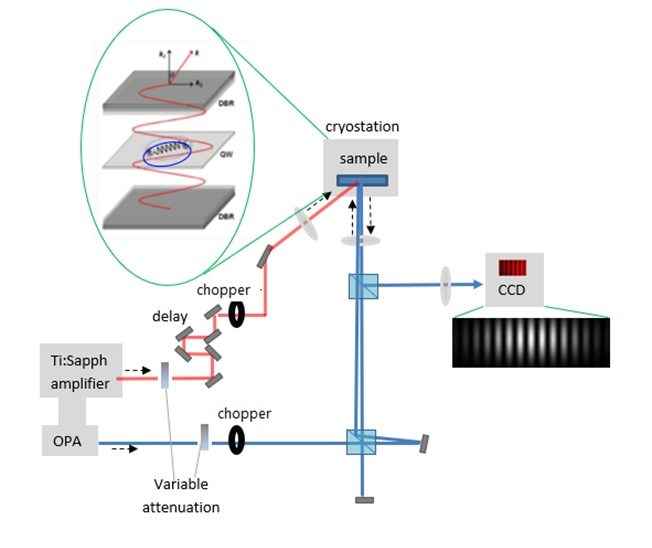
Project duration: Long Term
May 24
-
BEC was observed by Einstein in the early 1920s, and first demonstrated experimentally about 70 years after at ultra low temperatures (hundreds of nanoKelvin) in MIT and Colorado, They got the Physics Nobel Prize in 2001.
BEC of photons was obeserved in microcavities. We saw the effect in a fiber around room temperature.
We suggest to understand the effect and observe it in various fibers.Long Term Project
Oct 20
Electromagnetics & Photonics | Micro-electronics & Nano-electronics | Electronic Circuits, VLSI Systems & Power Systems
-
1. Project Title
Design and Simulation of a CMOS-Compatible Integrated Thermoelectric Cooler for On-Chip Temperature Stabilization
2. Background and Motivation
Modern CMOS integrated circuits, especially in:
silicon photonics
precision sensors (e.g., GMOS gas sensors)
analog front-ends
quantum and optical systems
require precise temperature stabilization at millikelvin level.
Temperature fluctuations cause:
drift in transistor characteristics
wavelength drift in photonic devices (~0.1 nm/K)
sensitivity degradation in thermal sensors
increased noise and reduced detection resolutionConventional thermoelectric coolers (TECs) are discrete components mounted at the package level. These solutions suffer from:
large thermal mass
slow response time (>10 ms)
high power consumption
poor temperature control at microscale
An integrated CMOS-compatible micro-TEC provides major advantages:
fast responseCurrent Semester
Mar 2
Electromagnetics & Photonics | Micro-electronics & Nano-electronics
-
Photonic integrated circuits (PIC) are promising for metrology and quantum application. One of the key problems in stepping forward is thermo-optic noise. This noise comes from variation in the temperature of the material caused by the surroundings and the light itself. In this project you will design a PIC that completely eliminates this noise [1], using clever geometry. You will use geometry to balance out the two components of this thermal noise: thermal expansion and thermo-refractive noise. Upon successful design, this idea will be tested in our experimental platform. This project will provide you with understanding and capabilities related in designing photonic optical circuits and noise management which is crucial for many classical and quantum applications.
[1] Cole, G., Zhang, W., Martin, M. et al. Tenfold reduction of Brownian noise in high-reflectivity optical coatings. Nature Photon 7, 644–650 (2013)Advisor: Prof. Eran Lustig
Project duration: Current Semester
Mar 2
-
Exploring the strong photon-photon interactions under constant fields
Photons typically interact weakly with each other, even inside materials. However, if we could make photons interact strongly they will behave more like electrons in a solid. When particles interact strongly in a material they can exhibit unexpected and exciting effects as was the case, for example, in the discovery of superconductivity for electrons,
In this project you will explore and calculate what happens when photons are strongly interacting in photonic integrated circuit (PIC) when subjected to constant effective fields.
In the project you will rely on current achievable parameters of PIC, and simulate with QuTip the behavior of photons in a regime where they are strongly interacting. The strong interactions and constant fields are achieved experimentally with a method called coherent photon conversion [1]. This project will provide you with theoretical and practical understanding and capabilities in quantum optics and in photonic integrated circuits.
[1] Langford, N., Ramelow, S., Prevedel, R. et al. Efficient quantum computing using coherent photon conversion. Nature 478, 360–363 (2011)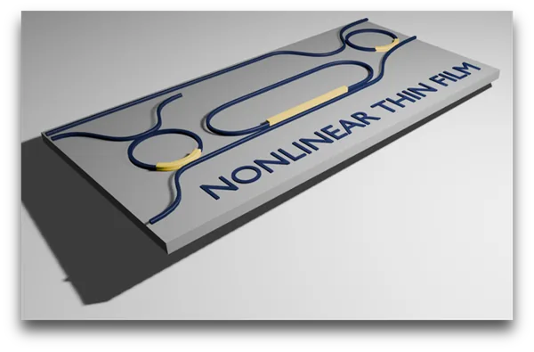
Advisor: Prof. Eran Lustig
Project duration: Long Term
Mar 10
Computers & Computer Networks
-
This project focuses on the methods to automatically detect data leaks present in modern CPUs which stem from the design flaws of speculative instruction execution. These leaks lead to severe security issues in these CPUs, allowing a sophisticated attacker to extract secrets, such as encryption keys, even if the software is perfectly correct. A well known example is SPECTRE attack which enables an attacker to extract data from memory by exploiting speculative execution of conditional branches.
This project builds on the recent work done in the Accelerator Computer Systems Lab in the Technion (ACSL) together with Microsoft Research Cambridge. The tools developed as part of this project have been used in production by Microsoft and some hardware vendors.
The students will deepen their knowledge of CPU architecture, hardware security, side channel analysis and attacks, and software/hardware testing and verification.
Advisor: Prof. Mark Silberstein (mark@ee.technion.ac.il)
Image: architecture
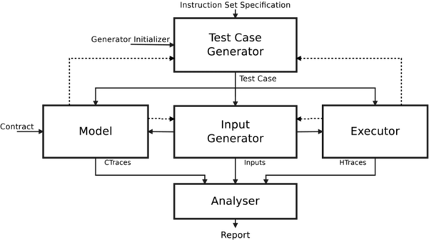
Project duration: Long Term
January 24
-
This project focuses on the development of new algorithms to enable a novel computational paradigm where computations are performed in the network while data is being transferred. Specifically, the computations are carried out by network routers and switches. In this project we will consider distributed computations with shared state, such as load-balancers, network monitoring and rate limiting. The key challenge is to enable execution of such computations in a resource-limited hardware of network switches, which in turn require new techniques and approaches.
The project involves learning new and relevant programming languages such as P4, distributed computing principles, approximate data structures and computer networks.
Advisor: Prof. Mark Silberstein (mark@ee.technion.ac.il)
Image: Mellanox-data-centric
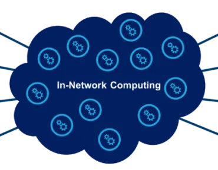
Project duration: Long Term
January 24
-
Existing AI-assisted code development requires multiple iterations of refining code until a full program can be generated (if at all).
However, such a development cycle will not work when developing drivers in an OS kernel. There are multiple challenges, including generation of thread-safe code, handling of asynchronous events, and finally correctness testing. In this project we will focus on the building blocks of a framework which will allow in-kernel evaluation of the generated driver code.
Advisor: Prof. Mark Silberstein (mark@ee.technion.ac.il)
Project duration: Current semester
Oct 20
Image & Signal Processing, Computer Vision & Bio-signals | Machine learning and intelligent systems
-
Magnetic resonance imaging (MRI) is a highly valuable medical imaging system known for its safety (no radiation) and rich imaging information. However, a significant limitation is the lengthy scan duration, typically 30-60 minutes per person. To address this, one common approach is to reduce the amount of sampled data by employing sub-Nyquist rate sampling. In MRI, data is sampled in the Fourier domain, and sub-Nyquist sampling can lead to aliasing and artifacts. Therefore, advanced image reconstruction algorithms are essential to generate clean, artifact-free images from the acquired data.
This project focuses on developing AI-based image reconstruction algorithms to achieve fast, artifact-free MRI scans. Our primary focus will be on MRI scans of neonates (babies), which present unique challenges such as frequent motion, small anatomical structures, and varying contrast due to developmental changes (see figure). Our goal is to develop “smart” methods that both accelerate scans and enhance image quality.
Students involved in this project will learn to work with MRI data and develop and train unrolled neural networks, which provide superb image quality through physics-guided modeling. Additionally, we will explore other AI models, including transformers and generative networks. The results will be tested on clinical data and the developed methods may have a significant impact on clinical scans of children.
Image:
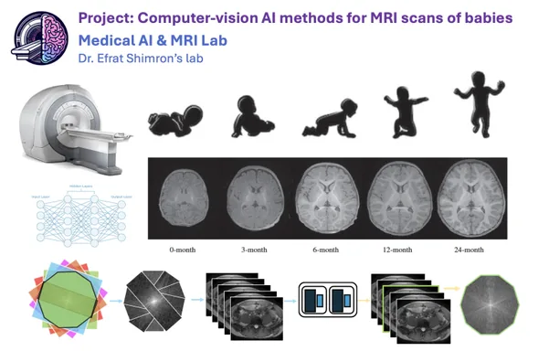
Project duration: Long Term
May 26
-
Magnetic resonance imaging (MRI) offers superb image quality and radiation-free scans, but at the cost of long scan duration and patient discomfort. Those scans can be accelerated by sub-Nyquist sampling, which requires algorithms for image reconstruction from partial data. In this project we will develop novel artificial intellience (AI) algorithms to solve such problems. We will utilize novel architectures such as transforms, and explore techniques for rapid sampling and uncertainty estimation. Multiple projects are available in these directions. Applications range from imaging of brain-cancer patients, through children (pediatric MRI), and adult body MRI, e.g. abdominal or cardiac scans. To establish our novel methods, data will be collected at the Technion’s new MRI research center.
Additional research directions include exploring Neural Implicit Representations, diffusion models, and spatio-temporal dynamic networks.Image:
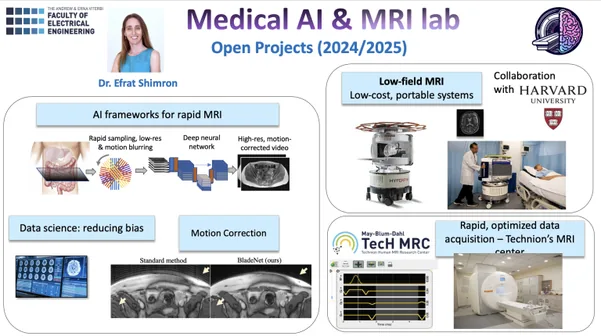
Project duration: Long Term
Nov 21
-
Diffusion models are a cutting-edge AI technique that generate high-quality images from random noise, powering tools like ChatGPT and Midjourney. This project aims to apply these models to Magnetic Resonance Imaging (MRI) to tackle a key challenge: reconstructing high-quality images from incomplete or limited data.
Although MRI is a superb, radiation-free imaging modality, its scans are slow and expensive. To accelerate scans, partial data is collected; this gives rise to an ill-posed inverse problem of image reconstruction. Another limitation is that collecting large datasets is challenging. To address these barriers, the students will use k-band, a method developed in the Shimron Lab, which enables training image reconstruction networks using only small segments of MRI data. The goal is to combine k-band with diffusion models in a self-supervised setup, to enable fast, high-quality MRI reconstruction with minimal data.
By the end of the project, the students will gain hands-on experience with generative AI, self-supervised learning, and inverse problems in medical imaging, and will know how to design AI systems that perform effectively even when data is limited.
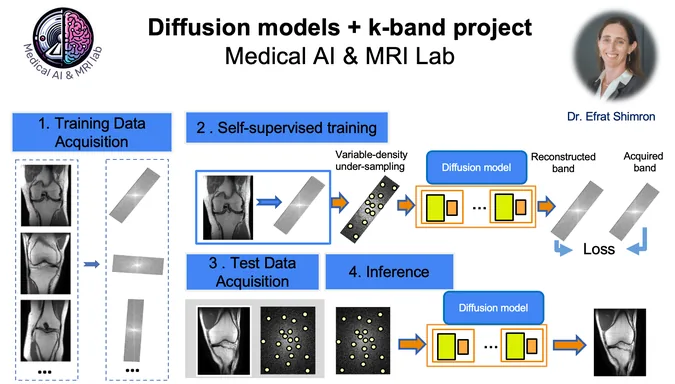
Project duration: Long Term
Oct 20
Machine learning and intelligent systems
-
AI has proven to be a powerful tool for modeling complex data sets, but mostly unable to provide model interpretability.
Therefore, researchers refrain from using AI as they are interested in learning about the statistical relations within their data, rather than making predictions.
Feature selection has been the leading strategy to increase model interpretability, indicating which input variables are mostly relevant for predicting the output variable.
In our recent work, we took a step forward and proposed an AI-based framework for contextual feature selection termed cSTG (see ref), where the system indicates the importance of features as a function of a given context.
In this project, the students will explore this novel methodology for the prediction of suicidal thoughts/actions among children and teens with ADHD.
The goals of this work are:
1. Detect the important features as a function of contextual parameters such as age, gender, and clinical evaluation.
2. Compare the performance of cSTG to conventional methods (linear models, non linear feature selection with no context).
This project is a collaboration of Hadas Benisty from The Faculty of Medicine, Technion, Tomer Levy M.D. Geha Mental Health Center and Liat Itzhaky, Columbia University.cSTG paper (to appear in ICML):
https://arxiv.org/abs/2312.14254v1Contact info: hadasbe@technion.ac.il
Project duration: Current Semester (The project proposal will be deleted after the end of the semester)
May 26
-
One of the most challenging tasks for autonomous robots is manipulating objects, like washing dishes, folding cloths, or organizing the house. This is also the fundamental barrier for bringing robots to human domains, like homes and hospitals.
Progress has been made in several recent breakthroughs that learn manipulation from data collected from humans demonstrating how to manipulate objects. However,, there is a “glass ceiling” to this approach, as the robots may need to perform some tasks differently from the human demostration.
Reinforcement learning is an algorithmic framework that allows an agent to improve its behvior through trial and error. In this project we will explore how to apply reinforcement learning for training the robot to improve its performance beyond the glass ceiling of the training demonstrations.
The project will be perfomed in the robot learning lab, and will involve real Franka Panda robots and various sensing modalities (not in simulation!).Image: lab
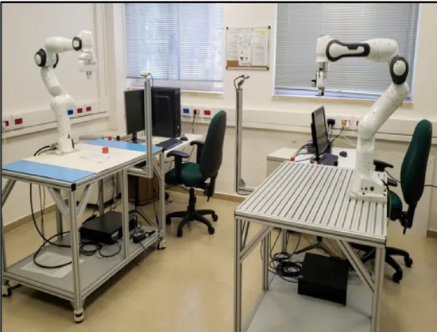
Project duration: Long Term
July 30
-
Palpation, the use of touch in medical examination, is currently only performed by humans.While AI has conquered domains of text, images, and audio, AI for understanding touch is at its infancy, mainly due to lack of internet-scale data.
In our lab we are pioneering AI for learning to process artificial tactile sensors, with a motivation of developing artificial palpation. This includes data collection (using robots with tactile sensors that “touch things”), developing learning algorithms that transform touch to 3D object maps, and investigating the theoretical capabilities of such methods.
The project will involve research in either automatic data collection or developing AI algorithms and architectures for processing the data (or both).Image: lab

Project duration: Long Term
Aug 11
Image & Signal Processing, Computer Vision & Bio-signals | Machine learning and intelligent systems | Communication & Information Theory | Computers & Computer Networks | Systems & Control
-
This project aims to innovate in the realm of speech enhancement, leveraging the advanced capabilities of head-worn microphone arrays, an area where significant strides have been made over several decades in improving speech quality and intelligibility. Traditional beamforming algorithms, primarily reliant on acoustic signals, often necessitate supplementary information or inferential mechanisms for effective beam steering. However, the dynamic nature of head-worn microphone arrays, such as those in smart headphones, smart glasses, and virtual/augmented reality headsets, poses unique challenges due to the rapid orientation changes relative to the room and sound sources.
The advent of these devices, equipped with head-tracking sensors and video recording functionalities, paves the way for a novel category of speech and acoustic signal processing algorithms. These algorithms can harness multimodal sensor data not only to compensate for shifts in head orientation but also to leverage these changes for enhanced auditory processing. This capability is particularly pertinent in addressing the well-known cocktail party problem, enabling users to concentrate on a single conversation amidst an environment of overlapping conversations and ambient noise.
Our project aims to develop and refine speech enhancement algorithms specifically tailored for head-worn microphone arrays with access to positional information. By incorporating this data, the algorithms can significantly improve the listening experience for users of wearable devices, assisting them in navigating complex auditory environments typical of the cocktail party scenario. We intend to utilize the dataset from the SPEAR challenge to validate and benchmark our algorithms, thus contributing to the evolution of assistive listening technologies that pass beyond traditional boundaries, offering augmented auditory capabilities to a broader spectrum of users, not limited to the hearing-impaired
image: Spear
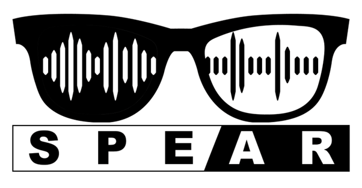
Long Term Project
December 23
Computers & Computer Networks | Electronic Circuits, VLSI Systems & Power Systems | Machine learning and intelligent systems
-
Neuromorphic computing is the discipline of building electronic circuits inspired from the brain. In neuromorphic computing, as opposed to von Neumann architecture, there is no separation between processing and storage and the computation is done in a neural network structure.
This project deals with the design of neuromorphic circuits for different purposes, such as inference of artificial neural networks, supporting training algorithms, and building bio-inspired machines.
In this project, the student will learn a machine learning algorithm and design the hardware to support it, either using artificial neural network or spiking neural network.
The project combines machine learning theory, computer architecture, and VLSI.
Long Term Project
Jan 14
Computers & Computer Networks | Machine learning and intelligent systems
-
Protocol reverse engineering (PRE) is vital for understanding undocumented or proprietary communication protocols, with applications in cybersecurity, interoperability, and malware analysis. However, current PRE techniques based on static and dynamic analysis produce incomplete message grammars, reach limited state coverage, and overall achieve low precision. These limitations hinder accurate protocol modeling and increase the effort required for manual validation. Observing recent breakthroughs in LLM research we believe there is a significant opportunity to leverage LLM’s comprehension and generation capabilities to enhance PRE.
In this project, we will investigate how LLMs can improve the precision and scope of PRE. We aim to develop data-driven methods that learn protocol structures and interaction patterns from network traces or binary samples. The project will involve designing LLM-based models to infer message formats and state transitions automatically, then evaluating their performance against traditional PRE approaches. The outcome will be a PRE framework prototype demonstrating the potential of LLM-Infused PRE frameworks.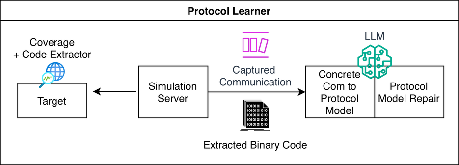
Long Term Project
Oct 20
-
As AI agents become more powerful and autonomous, securing their behavior in real time is a growing challenge. You will help build a new platform that uses GPU and CPU hardware hooks to inspect large language models (LLMs) as they run, similar to giving a neural network a built-in security camera. Working with next-generation hardware such as NVIDIA Grace-Hopper systems and explainability tools, you will design and prototype lightweight monitoring systems that detect when an AI agent starts to behave unexpectedly (for example, trying to replicate itself or leak data) and trigger automatic defenses. This is a hands-on opportunity to combine systems programming, GPU introspection, and AI safety, ideal for students interested in the intersection of deep learning, security, and hardware systems.
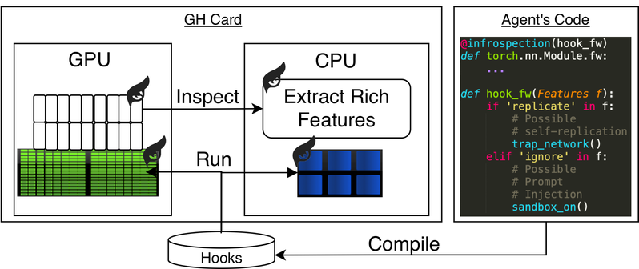
Long Term Project
Dec 25
Communication & Information Theory | Systems & Control
-
In the future, autonomous vehicles will be able to communicate with each other in order to share information and reach joint decisions. For instance, a vehicle about to pull its brakes before a road hazard could notify the vehicles behind it to avoid a chain collision. In another setting, vehicles could share sensor information to improve their knowledge of the surrounding environment. To give one more example, vehicles could coordinate among themselves who gets the right of way in an unsignalized intersection.
To facilitate such applications, vehicles make decisions by integrating information received in the vehicular network with optimization algorithms. Unfortunately, such algorithms typically assume a perfect communication network wherein information shared between the robots never gets lost, delayed, or corrupted. In reality, communication networks rarely provide such guarantees, which can compromise the performance of the vehicular system and even lead to hazardous outcomes.
In this project, we will explore a synergistic approach that designs the optimization algorithm alongside the communication network upon which it will run. In the first step, we will consider a specific multi-vehicle task of target tracking and will study the effect of communication failures on the performance of the system using a naive communication-oblivious algorithm. In the next step, we will consider a novel communication architecture of network coding, redesign the optimization algorithm around it, and explore the performance of the overall system.
Long Term Project
February 24
Communication & Information Theory
-
Noisy quantum computers are inherently prone to errors due to imperfect gates and decoherence. Understanding how error probabilities decay as the number of qubits or circuit depth increases is essential for reliable quantum computation. This project investigates error exponents: the exponential rate at which the probability of logical error decreases with increasing resources, through an information-theoretic analysis. We will derive fundamental tradeoffs between code size, noise level, and error decay, and explore implications for scalable quantum computation.
Prerequisite: 00460734Long Term Project
Oct 20
Computers & Computer Networks | Electronic Circuits, VLSI Systems & Power Systems | Machine learning and intelligent systems | Micro-electronics & Nano-electronics
-
Processing-in-Memory (PIM) is a radical change in computer architecture, where the memory cells themselves perform the computation.
There are several approaches for such techniques that differ from each other by the way data is represented and how the computation is performed.
In this project, we will perform the computation in our lab, demonstrating experimentally the feasibility and evaluating the performance of such logic gates.
Different memory technologies (memristors, PCM, MRAM, RRAM, DRAM, SRAM) will be explored.
This project is in collaboration with multiple partners such as Stanford University, Aachen University, Politecnico Milano, Northwestern University, Winbond, Weebit-Nano and more.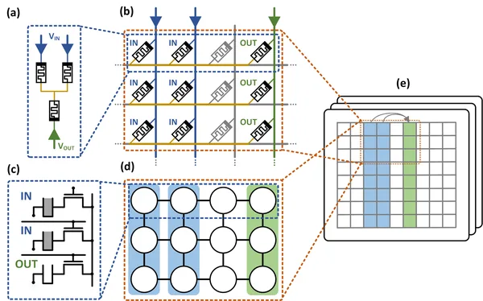
Long Term Project
Jan 15
-
Single Flux Quantum (SFQ) logic is a type of digital design based on Josephson Junctions. The idea is to use quantum phenomenon to build logic gates.
SFQ logic is attractive for applications such as interface between classical and quantum computers and for ultra-low-power datacenters.
In this project, the student will develop automation tools for synthesis and place and route of SFQ logic and develop efficient algorithms for such a design.
This research combines knowledge in physics with algorithms and VLSI.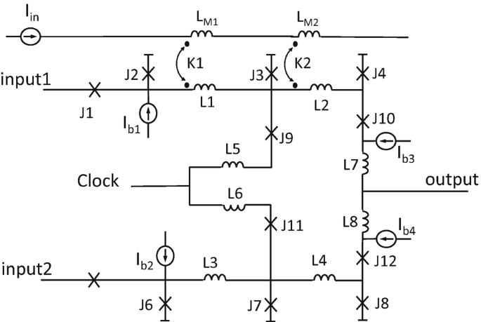
Long Term Project
Jan 22
-
This project explores the use of AI and EDA co-automation for the design of analog-to-digital converters (ADCs). The goal is to create a closed-loop design framework where a large language model (LLM) and Python scripts control the full design process—from specification to verified layout.
The project will focus on: Defining design specifications and selecting ADC architecture (SAR or pipeline). Automating transistor-level circuit generation and simulation using Cadence Spectre. Using Python orchestration for iterative optimization and verification. Exploring automated layout synthesis with tools such as ALIGN or Laygo2.
The outcome will demonstrate reduced design time and improved repeatability in analog design using AI-driven reasoning and automated simulation feedback.
Advisor: Prof. Emanuel Cohen emcohen@ee.technion.ac.il
Long Term Project
November 25
Electronic Circuits, VLSI Systems & Power Systems | Micro-electronics & Nano-electronics
-
Magnetic Tunnel Junctions (MTJ) are emerging devices used for nonvolatile memories.
The idea behind this project is to use them as building blocks for hardware security, for
example for the design of physically unclonable functions (PUFs) to construct unique signatures for chips.
This research is in collaboration with Prof. Pedram Khalili from Northwestern University and may include student exchange in Chicago.Long Term Project
Jan 21
-
This project focuses on designing a rapidly tunable RF filter based on superconducting technology. The key element is the Superconducting Quantum Interference Device (SQUID), used as a flux-controlled tunable inductor. The goal is to develop an analytical design methodology, validate it with circuit simulations in Keysight ADS (or an equivalent RF simulator), and explore parametric modulation as a means to improve the trade-off between power handling and tuning bandwidth.
Modern cryogenic microwave systems, such as quantum readout chains and low-noise front ends, demand filters with wide tunability and high linearity. Conventional SQUID-tuned filters achieve good frequency agility but suffer from limited power handling due to the critical current constraint of the Josephson junctions. Weak transformer coupling alleviates this but reduces tuning range. Introducing controlled parametric modulation of the SQUID inductance can potentially overcome this trade-off by dynamically enhancing coupling and creating deeper tunable notches.
The students will develop a simplified analytical model of a tunable RF resonator incorporating a SQUID element for frequency control, and study how transformer coupling affects the filter’s tuning range and power handling limits. The project will then introduce parametric modulation as a means to enhance tuning bandwidth or notch depth without sacrificing power capability. The student will implement the design in Keysight ADS using available SQUID and Josephson Junction models, followed by simulations comparing static flux tuning, dynamic (parametric) tuning, and power compression behavior. Based on these results, design strategies will be proposed to maximize tuning range while maintaining operation within realistic SQUID current limits.
Advisor: Prof. Emanuel Cohen (emcohen@ee.technion.ac.il)
Long Term Project
November 25
-
This project investigates a chip-scale free-space optical (FSO) transceiver based on a photonic integrated circuit (PIC) with an integrated metasurface antenna layer. The goal is to achieve long-range, high-bandwidth optical communication without bulky optics or mechanical beam steering. Operating near 1.55 µm, the design targets a 10 km link distance using a compact few-mm² aperture and modest transmit power.
The study focuses on evaluating two key architectures: dense photonic routing versus local per-element modulators beneath the metasurface. Local modulators offer compact, fine-grained phase control but are limited by device size, optical loss, and routing congestion within the array footprint. Dense routing, on the other hand, relocates the modulators outside the active aperture, allowing for larger, lower-loss devices and simpler thermal management, at the expense of increased routing complexity and potential optical path imbalance. The project will simulate both schemes to quantify trade-offs in efficiency, scalability, and beamforming accuracy.
The outcome will define optimal architectures for scalable metasurface-integrated FSO transceivers, balancing performance and manufacturability. The simulations will inform guidelines for future fabrication and system prototyping of high-gain, electronically steerable optical arrays.
Advisor: Prof. Emanuel Cohen (emcohen@ee.technion.ac.il)
Long Term Project
November 25
סטודנטים מספרים…
-
תיאור פרוייקט: בעיית הסופר-רזולוציה מנסה לקחת תמונה בעלת רזולוציה נמוכה ולייצר ממנה תמונה בעלת רזולוציה גבוהה כך שמצד אחד התמונה תהיה בעלת נראות טבעית ותשלים פרטים עדינים בצורה הגיונית, ומצד שני התמונה שתתקבל תתאים לתמונת הרזלוציה הנמוכה המקורית. כיוון שיש מספר אפשרויות לתמונת רזולוציה גבוהה שכזאת, מטרת הפרויקט היא לפתח ממשק משתמש טקסטואלי שבאמצעותו המשתמש יכול לטייל במרחב הסופר-רזולוציה של תמונת הרזולוציה הנמוכה, כלומר למצוא תמונת הרזולוציה הגבוהה הגיונית שהכי תואמת לטקסט שהמשתמש מכניס.
חוויה אישית: הפרוייקט היה מאתגר ומעניין מאוד, ומשך אותי לתחום של מודלים גנרטיבים, שבוא המשכתי לתואר מתקדם. הייחוד של הפרויקט המחקרי היה החופש בבחירת הפתרון וחשיבות של יצירתיות, שלימדו אותי הרבה על התהליך המחקרי.
מנחה: פרופסור תומר מיכאלי, דוקטור יובל בהט
שותפ.ה: רתם אידלסון
תחום מחקר: למידת מכונה ומערכות נבונות, עבוד אותות ותמונות, ראייה ממוחשבת ואותות ביולוגיים
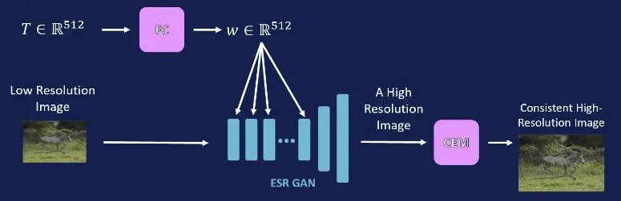